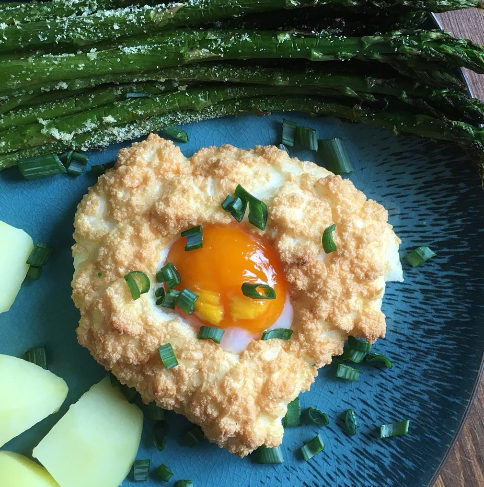

Cloud Eggs Recipe

Description
This recipe is for eggs with a new soft and cloudy texture. This fancy dish is very easy to make.
This recipe was taken from allrecipes.com.
Ingredients
- 2 seperated eggs
- salt and ground pepper
- 2 tablespoons grated Parmesan cheese
- 1 teaspoon chopped fresh chives
Steps
- Preheat oven to 400 degrees F(200 degrees C). Line a baking sheet with parchment paper.
- Beat egg whites, salt, and pepper in a bowl with an electric mixer until stuff peaks form. Fold Parmesan cheese in gently.
- Make 2 mounds of egg whites on the prepared baking sheet. Create a small indent in the centre of the egg whites with the back of a spoon.
- Bake egg whites in the preheated oven until lightly browned, 2 to 3 minutes. Remove egg whites from the oven and carefully place 1 yolk in the centre of each indent. Place back in the oven until yolks look set, about 3 minutes.
- Carefully remove cloud eggs from the parchment paper with a spatula or fish slice; slide onto plates. Sprinkle chives on top.